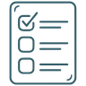

The Disruptor is built to create a richer educational experience for students in corporate entrepreneurship and innovation management. Students take the CIO role themselves, make consequential decisions under uncertainty, and live with the knock-on effects quarter by quarter. The field is presented as an integrated system (portfolio, strategy, people, IP, platform, partnerships, investing) rather than a string of isolated frameworks. The game works from zero prep to full semester integration, with flexible modes and the Incubator's progressive unlock so you can match it to your course rather than the other way around.
Why It Works for Teaching
The game is built around principles that make it effective in the classroom, not just engaging.
Learning Objectives Built In
The game includes a “What You’ll Learn” page, reached from the start screen, which sets out seven learning objectives under six themes: managing the innovation engine, corporate entrepreneurship and renewal, deciding under uncertainty, systemic thinking, AI in innovation, and leading and reflecting. You can point students (and external examiners) directly to it.
Learn by Playing, Not by Listening
Students experience consequential decisions under uncertainty, the central teaching goal. Running an alliance negotiation yourself teaches the trade-offs better than any lecture. Portfolio trade-offs become visceral when you watch your best project fail because you launched too early. Theory is embedded in systems, not delivered as text.
Accountability, Spoken
The management board meets on screen. Students watch its members argue over the year’s direction and the CEO decide, and at the end of each of the first two years they are questioned about what they actually did. Accountability is put to them by people, about their own decisions.
AI as a Management Decision
Students decide how far generative AI goes in the firm’s R&D, who supplies it, how people learn to use it and who may use the firm’s data, and pay for it from the same budget as everything else. The consequences reach staff, intellectual property and the firm’s purpose, which gives a seminar on AI something concrete to argue about.
Every Student Can Engage
The game levels the playing field: no verbal negotiations (helping non-native speakers), no group airtime competition (helping introverts), and multiple engagement channels (visual, numerical, narrative, and interactive) so different learning styles all find a way in. Students who would never raise their hand in a seminar will spend an hour exploring alliance strategies.
Optional Depth, Not Forced Complexity
Not every system requires equal attention. Core gameplay is playable without mastering every panel. Deeper systems (standards engagement, IP strategy, corporate venturing) reward exploration but do not punish ignoring them. Different students engage differently, and that is fine. The debrief is where you surface what each student discovered.
Innovation Concepts in the Game
Innovation management and corporate entrepreneurship are the overarching frame: leading the innovation function of an established firm. Within that frame, around twenty-five concepts from the innovation-management literature are wired directly into game systems. The scholars behind each idea live in the Pantheon, available to players in context. Below is a taste of the concepts themselves, and where students meet them in play.
Knowledge flows, networks and absorptive capacity
How the firm connects to outside knowledge (universities, standards bodies, scouts, alliance partners, crowdsourced ideas) and what it takes to convert that connection into actual learning inside the firm.
Absorptive Capacity
External knowledge cannot be exploited without internal R&D to decode it. Starve the University, Scouting and R&D systems and alliance outputs come back thin even when partners are strong.
Systems of Innovation
Firms innovate through networks, not alone. Alliances, Universities, Standards and Scouting form one interconnected flow; underinvesting in any one thins the others.
Technology Gatekeepers
External information enters the firm through a small number of individuals. Scouts with diverse specialisations and strong external networks bring back richer findings than generalists.
Structural Holes
Brokers spanning disconnected communities access non-redundant information. Alliance portfolios that bridge distant partners outperform dense, clustered ones in the alliance-value calculations.
Basic Research & Academic Networks
Firms fund basic research partly to stay on speaking terms with the academic world. University partnerships unlock early access to findings; disengagement leaves the firm informationally isolated.
Capabilities: what the firm can actually do
The Capabilities map is the firm's operating muscle: ten domains (biomechanics, electronics, software, materials, design, manufacturing, data analytics, connectivity, sustainability, VR/AR) that must be built, balanced and sustained.
Resource-Based View & VRIN
Sustained advantage comes from resources that are Valuable, Rare, Inimitable and Non-substitutable. The Capability Assessment rates each capability on those dimensions.
Managerial Capacity as Growth Limit
Firms grow only as fast as their managers can absorb new activity. Senior-staff shortages cap how many active projects the Director can actually run.
Capability Breadth & Sectoral Patterns
Firms need to know more than they make. A narrow capability base restricts the innovation types you can propose; breadth opens new categories of project.
Core Rigidities
Strong capabilities become traps. Over-investing in one domain slows the firm's response to paradigm shifts; imbalanced portfolios surface as capability-risk warnings.
Dynamic Capabilities
Sense, seize, reconfigure. Capabilities that are not actively used decay; continuous reinvestment is needed just to hold level. The whole game re-plays this loop quarter by quarter.
Paradigms, trajectories and disruption
The landscape shifts under your feet. Technological paradigms come and go; incumbents get disrupted; dominant designs set, then unset. The R&D portfolio, Competitor and Scouting systems stage these dynamics.
Creative Destruction
Innovation disrupts existing markets and destroys incumbent advantages. The competitor system plays this out live: competitor moves erode margins and share unless matched.
Technological Paradigms & Trajectories
Innovation is cumulative and path-dependent. The three-horizon portfolio (H1 incremental, H2 adjacent, H3 breakthrough) models trajectory choice directly.
Disruptive Innovation
Low-cost, lower-performance entrants nibble at the base of the market. Scouting flags these threats; the R&D decision is whether to respond or let the low end go.
Competence-Destroying Discontinuities
Some innovations make incumbent know-how worthless. Betting the firm on legacy capabilities leaves it exposed to paradigm-shift attackers.
Architectural vs Component Innovation
Reconfiguring how components connect is a different problem from improving the components themselves. Proposal types and team requirements differ accordingly.
Industry Life Cycle & Dominant Design
Products pass from fluid, through transitional, to specific phases. Home fitness is post-dominant design (incremental); AI coaching is pre-dominant (radical). R&D strategy should match.
Platforms, standards and value capture
Innovation without appropriation is charity. The Platform, Standards, IP Management and Alliance systems ask how the firm captures value from what it creates, and who it shares it with.
Modular Architecture & Design Rules
Stable interfaces at module boundaries let a complementor ecosystem innovate independently. The Vélox+ Platform modal makes design-rule stability a live decision.
Path Dependence in Standards
Early standards lock in trajectories: QWERTY does not go away. Early participation in the Standards system shapes the whole industry; late entry is costly.
Appropriability & Complementary Assets
Value capture depends on who controls the supporting assets: manufacturing, distribution, brand. The IP Management and Alliance systems ask which assets you own and which you need partners for.
Patents, R&D Policy & Public Funding
Grants, R&D tax credits and patent strategy interact. The Grants, University and IP systems operationalise the public-policy side of innovation economics.
Organisation, teams and diffusion
None of it works without an organisation that can hold it together. The Org Structure, Staff, Corporate Venturing and Innovations systems bring the human and market side of innovation into play.
Evolutionary Routines
Firms operate through habitual routines that encode knowledge. Frequent restructuring breaks routines and slows the firm; stability lets depth accumulate.
Tacit Knowledge & the Knowledge-Creating Company
Deep knowledge travels through face-to-face interaction, not documents. Team stability and cross-functional collaboration compound; high turnover erases them.
Psychological Safety & Intrinsic Motivation
Teams that can admit errors iterate faster; autonomy and mastery unlock creative work. Decentralised structures raise both; hierarchical surveillance suppresses them.
Strategic Pace & Fast Decisions
Fast, iterative decisions using real-time data beat slow, comprehensive analysis. Corporate Venturing rewards staged commitment over big upfront bets.
Opportunity Tension & Innovation Journeys
Innovation is managed tension between exploration and exploitation. Alliances and university partnerships let you do both simultaneously; the game makes the tension explicit.
Diffusion of Innovations
Adoption follows an S-curve: early adopters, then majorities, then laggards. Product launches ramp along the curve; timing against competitors determines whether you lead or follow the wave.
The Pantheon of Innovation
The Pantheon of Innovation is a feature of the game that surfaces the ideas underpinning each system. When a player faces a strategic dilemma, a relevant scholar appears with a short insight drawn from the research. Players can also browse the full gallery at any time (a library of innovation thinkers, their biographies, and their contributions), giving a direct route from gameplay into the literature that has shaped the field, and a chance to learn about the people whose work built it.
Six Ways to Use The Disruptor
From zero prep to full course integration. Start with Quick Play or Homework: you can always scale up.
Zero Prep
A. Quick Play: One Hour
Share the game link five minutes before class. Students play Incubator mode (progressive unlock: just the R&D Portfolio and the Innovation Launchpad to start). The built-in Quick Guide gets them going in minutes. 45 min play + 15 min debrief. Walk the room, observe, facilitate discussion at the end. Remind students to save their game, or download their report if they reach the end.
Minimal Prep
B. Homework, Then Discuss
Assign as homework: "Play the Incubator mode for 45 minutes. Unlock at least 3 systems. Come to class ready to discuss what happened." Students choose which systems to unlock based on curiosity. In class: 20 to 30 min discussion. "Who unlocked Alliances? What happened? Who tried CVC?" Students arrive with stories, not summaries.
Some Prep
C. Weekly Module: 30 Min / Week
Choose which system to unlock each week, matched to your syllabus. Students play the same game across the semester, building a layered understanding. 30 min play + 10 min debrief each week. By week 8 to 10, students have a rich, multi-system company to discuss. Each week's unlock mirrors your lecture topic: students experience the concept before or after you teach it.
Moderate Prep
D. Workshop: Half-Day Deep Dive
Assign the Vélox case study as pre-reading. Phase 1 (30 min): Case discussion: students discuss strategic position and what they would do as CIO. Phase 2 (60 min): Play the Forge (all systems available). Phase 3 (30 to 45 min): Debrief using the students’ end screens and reports. The case gives students context before they play; they arrive with opinions, then test them.
Moderate Prep
E. Team Challenge: Competitive Comparison
Pair gamers with non-gamers in teams of 2 to 3. All teams play the same mode for fair comparison. 60 to 90 min play + 30 min competitive debrief. Teams compare their end screens and reports: how each year was judged, income against the goals, The Disruptor’s score, and the choices behind them. Gamers navigate the interface quickly; non-gamers bring strategic thinking. The combination is powerful.
Full Integration
F. Full Semester
Design a multi-mode progression: case study in Week 1, Incubator for weeks 2 to 8, switch to Forge or Pivot for weeks 9 to 12. Assessment: a reflective essay, with the end-of-game report as evidence of play. Outcomes carry a large element of chance, so mark the reasoning rather than the score. Students build expertise over time, just like real managers.
The Incubator: The Educator's Mode
The Incubator is the single most important feature of The Disruptor for classroom use. It turns a full, sprawling simulation into a teachable progression that maps directly onto a syllabus.
What it is
The Incubator is a variant of the Forge that stages which managerial practices and systems your students meet. Students begin with two playable systems open (the R&D Portfolio and the Innovation Launchpad), along with informational views of a handful of others. Everything else is locked behind a gate. As the term goes on, students open further systems themselves, one at a time, each paid for from the innovation budget; you can tell them which to open and when. Each unlock adds a new layer of complexity (alliances, platform, IP strategy, corporate venturing, standards, and so on) and a new set of decisions that connect back to the choices they have already made.
This lets you match the game to the week's topic. Teaching alliances this week? Unlock Alliances, then debrief on what actually happened. Covering IP strategy next? Unlock IP Management. Want to focus on portfolio and people first, and skip standards entirely? You can. The Incubator keeps the full richness of the simulation available, but stages it so students are never drinking from a fire hose.
Gentle onboarding
Competitive pressure is lower, targets are a little more forgiving, capability decay is slowed, and the board does not end the appointment over a poor record. Students who have never played an interactive simulation before can find their feet without being punished for early mistakes. By the end of their first session they are usually asking to unlock more.
A syllabus-shaped curve
The Incubator is deliberately built to allow a weekly or bi-weekly rhythm: one or two systems a week, debriefs tied to what they just unlocked, cumulative decisions that carry forward. By week eight a student will have a richly textured company (product portfolio, people moves, patents, alliances, a platform, an investment or two), all built by their own hand. That shared experience is what the final debrief draws on.
Educator control, student agency
You decide the unlock schedule, or let students choose, or do both, setting a core sequence and leaving optional unlocks open. Because each unlock costs budget, students have to make a real choice about what to bring online next. That meta-decision is itself a teaching moment: why invest in scanning versus IP? Why now? What's your theory?
Designed for reflection
Because students unlock the systems at different times in different runs, their experiences diverge. One team leans into alliances early and gets a boost; another plays a purer internal-R&D game. The debrief then becomes a real comparison of strategies, not a right-answer exercise. Teaching-guide prompts are included for each system.

Onboarding students: some practical tips
Students may find the simulation challenging at first. That is by design. No one just walks in off the street and starts to be an effective CIO. Like Football Manager, novice players may struggle. There are three ways to help: 1) try to encourage them to see the simulation as a 'safe space' where failure is part of the process of learning, 2) require them read the case (or at least the key facts and website) before starting to gain a better understanding of the company and its industry context, 3) pair a gamer with a non-gamer, as experienced gamers (especially in simulations) will learn more quickly how to play and can share their experience. This can also encourage a more social learning experience.
The Executive Debrief: Meet Katrien De Wolf
At the end of their tenure, students sit down with Katrien De Wolf, CEO of Vélox Dynamics, for an exit interview about their run. She reads the end-of-game report, Your tenure at Vélox (downloaded from the end screen), before she says a word: no report, no debrief. To try her yourself, use the sample review in the Educator's Pack.
A purpose-built Educator's Pack is available to lecturers and educators on request.
Teaching Note
Educator guide covering deployment formats, the Incubator unlock system, debrief questions, and suggested discussion threads for each system of the game.
Exam Question Bank
A set of exam questions pitched at Master's level, mapped to the game's systems and to the Vélox case study.
Student Onboarding Sheet
One-page student handout covering the game's core concepts, the CIO role, and what to expect. Designed to get students playing without a lengthy briefing.
In-Class Introduction Presentation
Slide deck for introducing the simulation in class: the setting, the CIO role, and how the session will run.
Request the Educator's Pack
The Educator's Pack is free to use in non-commercial educational settings under CC BY-NC-SA 4.0. Email a request here.
The Vélox Dynamics Case Study
A separate business school teaching case is embedded in the game as a PDF and available as a standalone document. It covers the company's origin story, the Van Marcke Foundation's governance, the competitive landscape, and the strategic tension between engineering heritage and digital transformation. Students who read the case before playing tend to make strategic decisions rather than treating the game as a resource-allocation puzzle.
Sample Lesson Plan (Workshop Format)
A structured 2.5 to 3 hour session integrating case discussion, gameplay, and debrief.
1
Pre-Work (before class)
Students read the Vélox Dynamics case study (20 to 30 min) and prepare written answers: What is Vélox's core tension? What strategic options exist? How would you approach it?
2
Case Discussion (30 to 45 min)
Facilitate discussion exploring the heritage vs. disruption tension, Foundation governance trade-offs, and strategic options. Draw out key concepts: ambidexterity, open innovation, capability constraints. Build buy-in for the simulation.
3
Play (at least 45 min)
Individual or pairs: each student takes the CIO role. Use The Forge (all systems) for experienced groups, or The Forge/Incubator (progressive unlock) for first-time players. The built-in tutorials handle onboarding; you walk the room and observe.
4
Debrief (30 to 45 min)
Structured reflection using the end-of-game reports as evidence. What surprised you? How did Foundation governance constrain your choices? What trade-offs did you face? What would you do differently? Three good questions are better than ten generic ones: pick the ones that match your course. The teaching guide includes ready-made debrief questions organised by topic.
Frequently Asked Questions
For answers to common questions from educators and students, see the FAQ.
Technical Requirements
The Disruptor runs entirely in the browser with no installation, no server, and no student registration.
Browser & Devices
Chrome, Firefox, Safari, Edge: any modern browser. Desktop or laptop recommended. Tablets work in landscape orientation. No app store, no plugins, no IT department involvement.
Offline & Portable
The whole simulation is an HTML file with its pictures and a few companion pages, among them the board’s meetings and the mini-games. Save the whole folder once and it plays on any machine: drop it on a laptop, open in a browser, play. Without a connection the simulation runs and the end-of-game PDF can still be made, but the opening video and the case study do not load. The game does not save by itself: players save their game to a file and load it later. Refreshing the page starts a new game.
Duration
Probation mode (1 year): around 30 minutes. Full three-year run: at least 45 minutes, and longer in most cases for new players. Players can save and restart at any time. Built-in Quick Guide: 5 minutes. Case study pre-reading: 20 to 30 minutes.
Cost
Free. No licence fees, no per-student charges, no registration required. Open source: content under CC BY-NC-SA 4.0, software under PolyForm Noncommercial 1.0.0. Students open a link and play.
Licence & Citation
The Disruptor’s content is released under CC BY-NC-SA 4.0 and its software under PolyForm Noncommercial 1.0.0. Educational use is free; commercial use (executive education with fees, corporate training, paid consulting, bundling into paid products, etc.) requires a separate commercial licence.
Educational use: free. Undergraduate, postgraduate, MBA, EMBA, and doctoral programmes (including fee-paying programmes), short courses and summer schools at accredited institutions, MOOCs offered free or as part of accredited programmes, in-class or flipped-classroom use, embedding in Moodle/Canvas/Blackboard, student competitions and hackathons, academic research, faculty development, and self-directed learning by individuals.
Commercial use: separate licence required. Paid executive education, corporate training, consulting engagements using the simulation as a deliverable, commercial workshops or bootcamps, reselling or sublicensing, or hosting behind a paywall.
Salter, A. (2026). The Disruptor: A Corporate Entrepreneurship & Innovation Simulation (Version 2.0.0) [Software]. Warwick Business School, University of Warwick. https://disruptorsim.org. Content licensed under CC BY-NC-SA 4.0; software under PolyForm Noncommercial 1.0.0.
Ready to Teach?
Start with Quick Play: share the link, walk the room, debrief. You can always scale up from there.
 The Vélox Dynamics Case Study
The Vélox Dynamics Case Study